Last modified
주요 과목
25-2학기
인공지능 데이터·AI
키워드
- Python
- scikit-learn
- Roboflow
- Colab
- ROS 2
- 차선 인식
- 데이터 기반 모델
- 배운 내용기계학습·인공지능 기초 이론 · 공학 문제를 물리 모델과 데이터 기반 모델 두 관점에서 보는 법
- 활용 도구Python · scikit-learn · Colab · Roboflow · ROS 2
- 결과물회귀·분류 실습 · 기말 개인 발표에서 수업 과제로 교내에서 수집한 주행 데이터로 차선 인식 모델 3종 비교 · 학습된 모델을 ROS 2에서 카메라 영상 추론 노드로 구동해 모델 구조별 검출 결과 대조
- 익힌 것데이터 수집 → 라벨링 → 학습 → 평가로 이어지는 머신러닝 개발 흐름

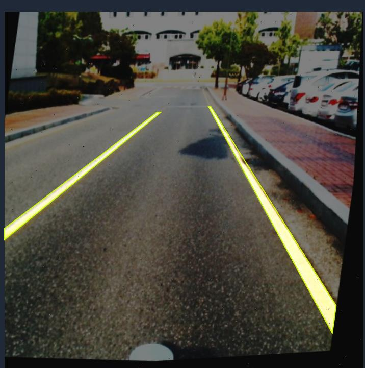

교내 주행 데이터를 모은 대회 차량 프로젝트(ERP42) 보기 →
계측공학 계측·제어
키워드
- LabVIEW
- 웨이브폼 차트
- 변형률
- 응력
- 센서
- Simulink
- 배운 내용계측 시스템·센서 동작 원리 · Simulink
- 활용 도구LabVIEW
- 결과물스위치 상태에 따라 상수와 난수를 골라 웨이브폼 차트에 한 점씩 그리는 연습 VI · 3인 조 발표에서 변형률·응력 계측 파트 발표(재료역학 이론을 계측의 목적과 연결)
- 익힌 것물리량을 전기적 신호로 바꾸고 계측 데이터를 시각화하는 기초 원리

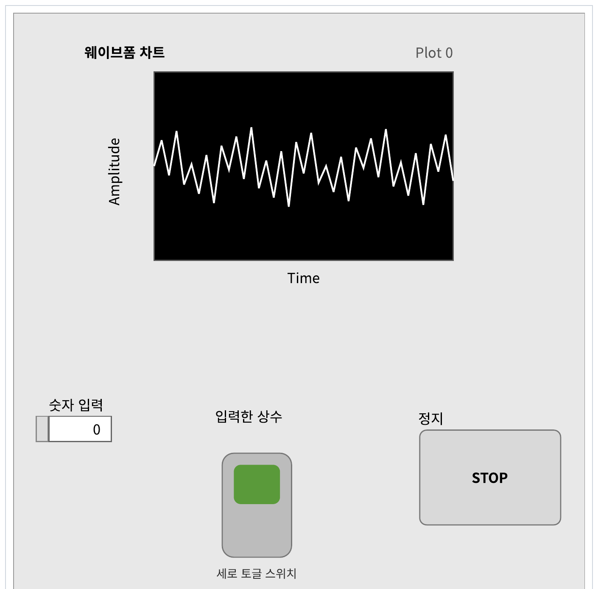

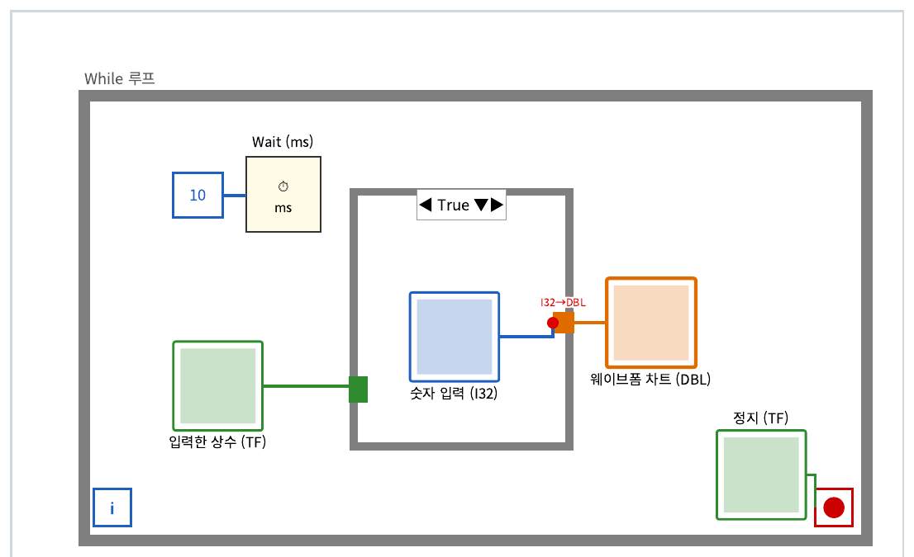
25-1학기
종합설계 졸업 프로젝트
키워드
- Arduino
- 열화상 센서
- 차동 제어
- 설계보고서
- 캡스톤디자인
- 배운 내용마이크로프로세서응용 등 전공 과목에서 배운 제어 지식
- 활용 도구Arduino · 열화상 센서 · 좌우 DC 모터
- 결과물익수자에게 스스로 다가가는 무인 열감지 구명보트(3인 팀)
- 역할열화상 센서 처리·코드 통합, 좌우 모터 차동 제어·회로 구성은 팀원들과 함께 · 그중 모터 드라이버 회로와 설계보고서 작성은 본인
- 익힌 것기획 → 부품 구매 → 제작 → 테스트 → 발표의 전체 개발 주기를 거치며 하드웨어와 제어 회로를 통합하는 과정
기계재료학 재료·역학
키워드
- S50C
- JIS
- ASTM
- 물성표
- 열처리
- 금속재료
- 배운 내용재료 구조 · 상평형도 · 열처리 원리
- 활용 자료JIS·ASTM 규격 · 물성표
- 결과물졸업 프로젝트에서 직접 가공한 S50C 탄소강 분석 리포트 — 성분·열처리에 따른 기계적 특성, 가공성·비용 효율성, 나아가 낮은 내식성·용접 한계까지
- 익힌 것단순 강도뿐 아니라 가공성·경제성·부식·접합 조건을 종합해 재료를 선정하는 기준

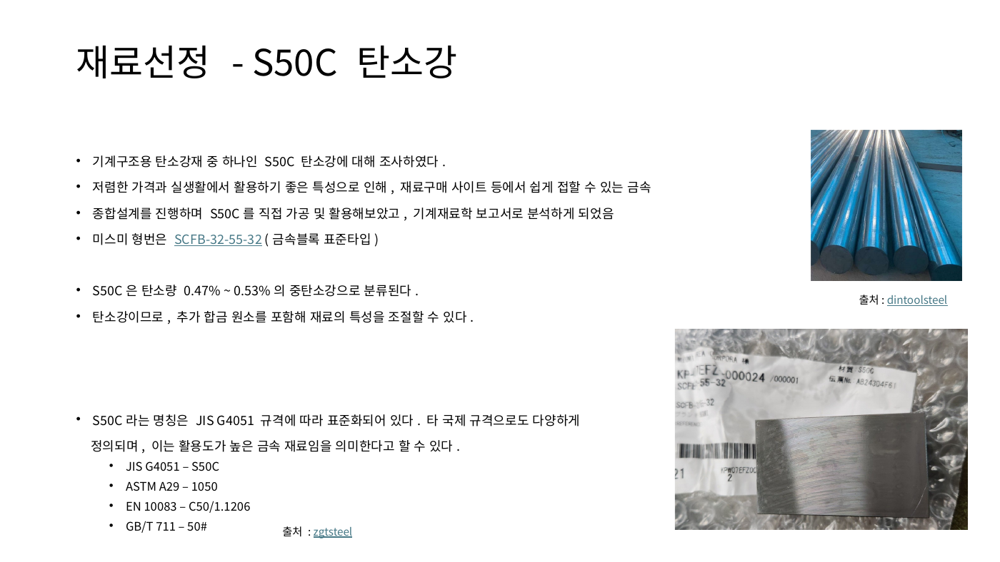

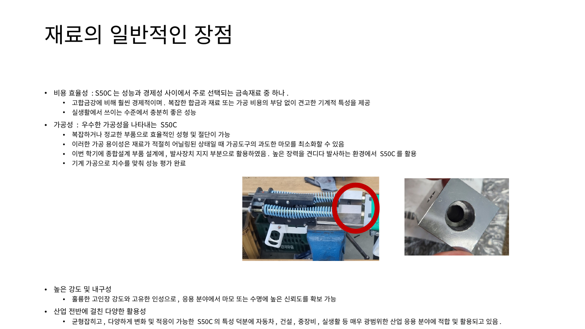
냉동공조 열·공조
키워드
- 열역학
- 유체역학
- 공기조화
- 냉동 사이클
- 클린룸
- 배운 내용열역학·유체역학을 바탕으로 한 냉동 사이클과 공기조화 원리
- 결과물공조냉동 과제 4개 제출
- 익힌 것실생활 에어컨의 작동 원리와 클린룸 등 산업 공조 환경에 쓰이는 냉동·공조 원리 · 열과 유체의 에너지 전달 과정을 시스템 관점에서 해석하는 기본 개념
생산품질공학 생산·품질
키워드
- 관리도
- PDCA
- 제조공정
- 통계 기초
- 가설검정
- 품질 활동
- 배운 내용제조공정·생산 시스템 · 공정 관리 통계(가설검정·관리도) · 품질 철학
- 결과물슈하트 관리도와 데밍의 PDCA 순환 개념 정리
- 익힌 것통계적 기법으로 공정의 산포를 감시하고 이상 원인을 관리하는 체계 · 제조 현장에서 발생하는 품질 변동을 데이터와 표준화 관점에서 지속적으로 개선해 나가는 관리 역량의 중요성
24-2학기
재료및역학실험 재료·역학
키워드
- Octave
- Matlab
- ASTM E399
- 파괴인성
- S-N 선도
- 마이크로 비커스
- 재료역학
- 배운 내용재료역학 이론(응력·변형률·굽힘·파괴·피로)
- 활용 도구Octave · Matlab · 국제 시험 규격(ASTM)
- 결과물인장·굽힘·파괴인성·경도·피로 5종 시험의 시험기 원시 데이터(.dat)를 Octave·Matlab 스크립트로 직접 처리해 물성 계산·선도 도출 → 시험별 개인 보고서 · 파괴인성 시험에서 ASTM E399 유효성 검사 코드를 작성해 조건 미충족을 직접 판정
- 익힌 것규격에 맞지 않거나 예상과 다른 결과도 버리지 않고 원인과 한계를 분석해 남기는, 실험 데이터를 객관적으로 검증하는 엔지니어의 태도

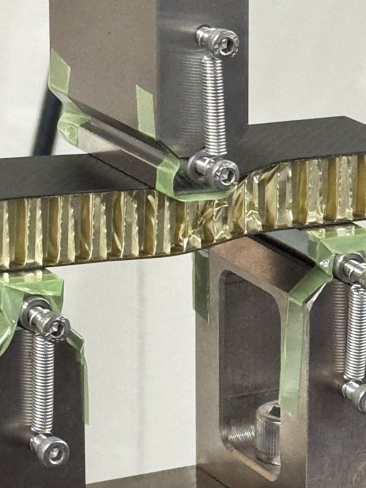


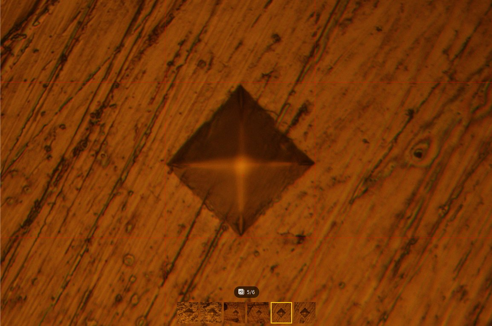

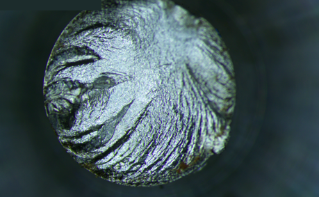
시험 데이터·코드와 보고서에 실은 규격 그림

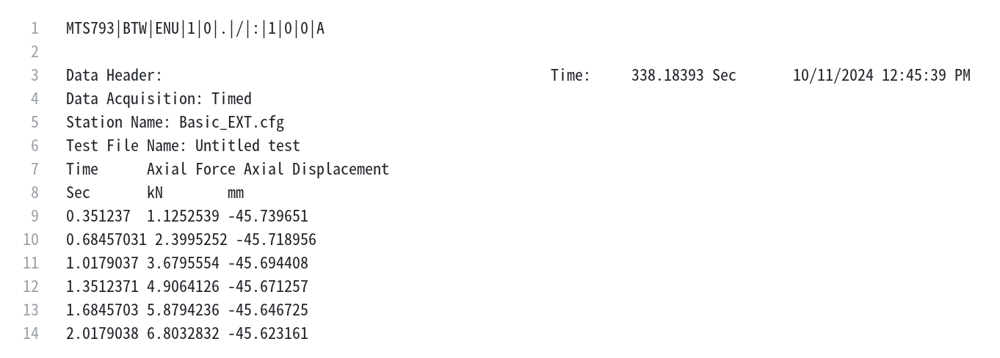


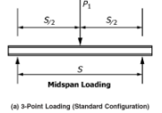

CAD응용 설계·형상
키워드
- 컴퓨터 그래픽스
- Octave
- 동차좌표
- 로드리게스 회전 공식
- 베지어 곡선
- 베지어 곡면
- SolidWorks
- 배운 내용컴퓨터 그래픽스와 CAD 프로그램이 쓰는 형상 모델링 수학(기하 변환·곡선·곡면 생성)
- 활용 도구Octave
- 결과물기하 변환과 곡선·곡면 생성 알고리즘을 Octave 코드로 직접 구현 — 동차좌표·로드리게스 회전 공식으로 도형을 변환해 탄소나노튜브 구조 출력 · 조정점과 가중치를 다루는 유리 베지어 곡선과 베지어 곡면 시각화
- 익힌 것좌표계 변환과 매개변수 곡면이 생성되는 원리를 코드로 확인 · 평소 쓰던 SolidWorks 기능이 어떤 원리로 돌아가는지 생각해 봄

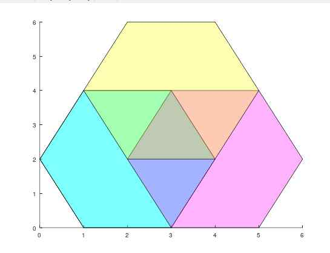

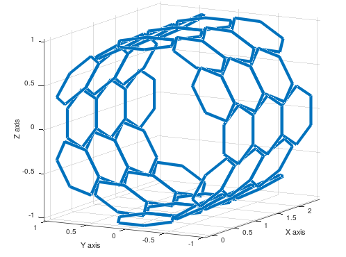

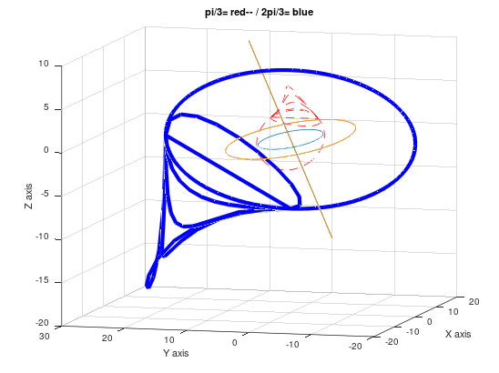


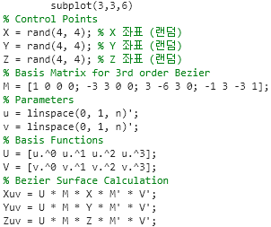
자동차공학 설계·형상
키워드
- 엔진
- 변속기
- 동력 전달
- 차체
- 기계요소
- 제원
- 배운 내용자동차 핵심 기계요소의 작동 원리와 동력 전달 이론 · 엔진의 출력 발생 과정과 자동변속기 등 동력 전달 메커니즘이 실제 차량에서 구현되는 방식
- 결과물차량 1종의 차체·엔진·변속기·성능 제원 조사·정리
- 익힌 것개별 기계요소들이 유기적으로 결합되어 완성차의 주행 성능을 구성하는 전체 시스템적 연계
24-1학기
마이크로프로세서응용 계측·제어
키워드
- Arduino
- PWM
- 스텝모터
- 엔코더
- ADC 변환
- 폐루프 제어
- 라인트레이서
- 배운 내용마이크로프로세서 제어 원리 · 아날로그 센서 값의 ADC 변환 · PWM 구동 신호 · 엔코더 피드백을 쓴 폐루프 제어(강의 예제)
- 활용 도구Arduino
- 역할2인 팀 과제에서 강의 예제 코드를 응용·수정한 소스코드 작성과 보고서
- 결과물가속도 센서 값으로 충격 방향을 LED로 표시하는 장치 · 한 면이 계속 위를 향하게 하는 스텝모터 각도 유지 장치 · 적외선 센서 라인트레이서의 코드
- 익힌 것센서 신호를 받아 구동기를 제어하는 임베디드 제어 기초

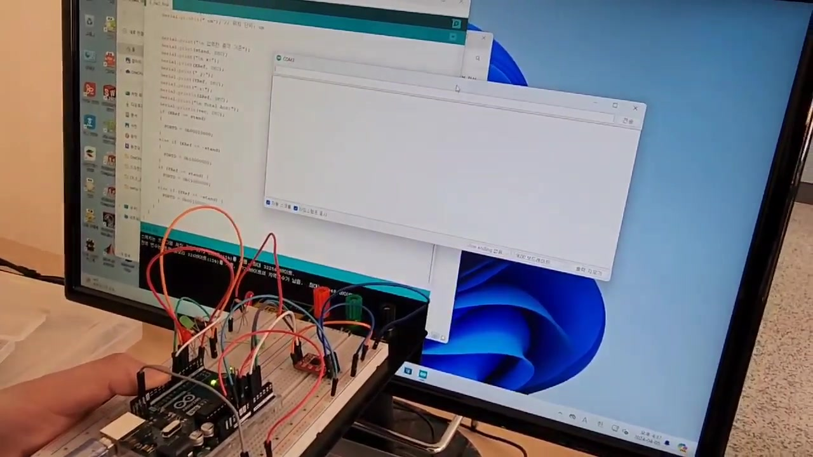

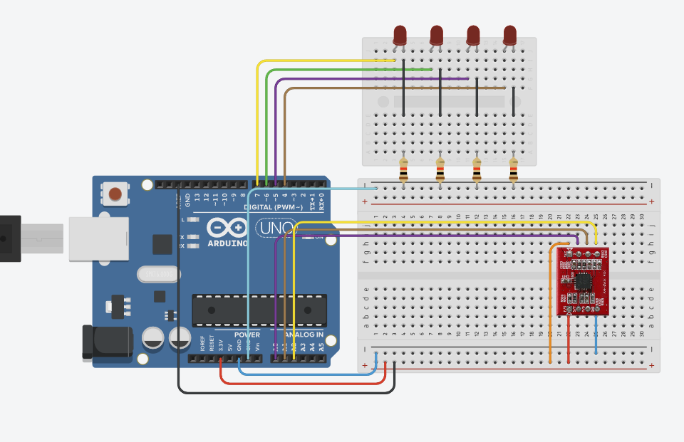

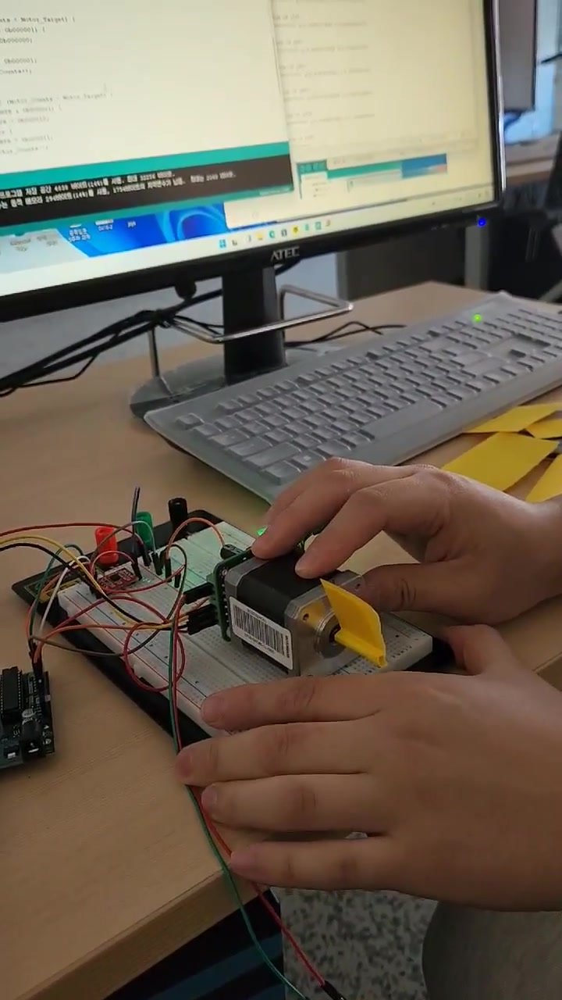

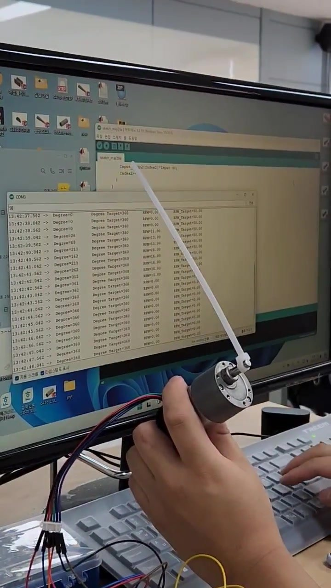

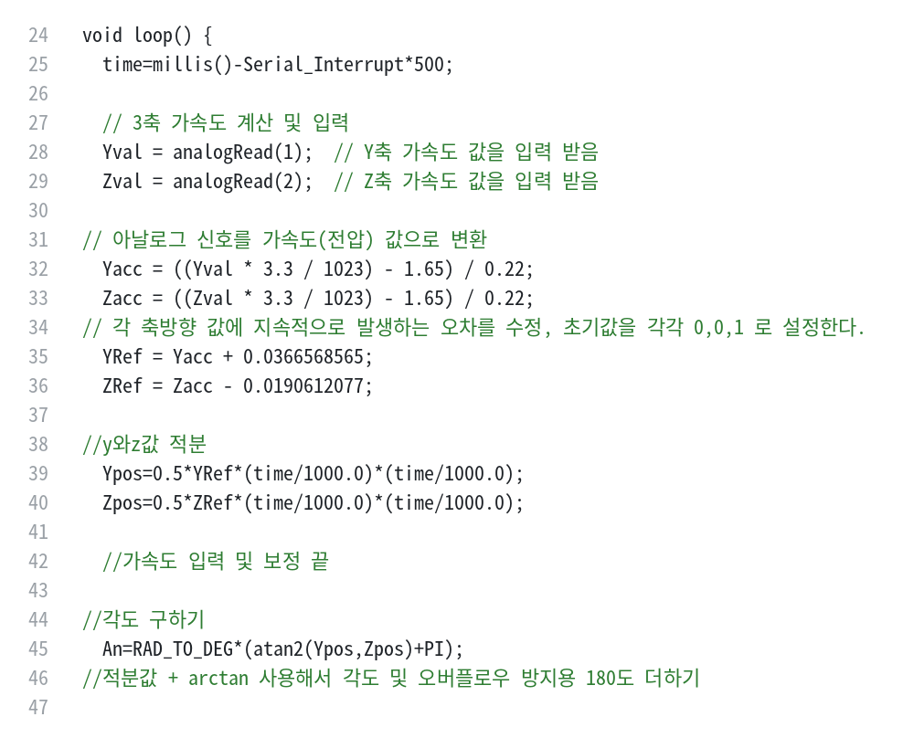
23-2학기
기계공작실습 제조·생산 · 앞 학기(23-1)에 배운 기계공작법·기계재료학과 연계
키워드
- 밀링
- 선반
- 아크 용접
- 도면
- 공차
- 공정 순서
- 절삭유
- 배운 내용기계공작법·재료 이론을 바탕으로 한 가공 실습(2인 조)
- 활용 장비밀링 · 선반 · 아크 용접 · 측정기구
- 결과물도면 해석 → 공정 순서 설계 → 금속 공작물 직접 가공 · 주차별 실습 보고서
- 수행 내용단면 절삭·나사 가공 · 백래시를 고려한 치수 공차 관리 · 용입 상태에 따른 용접 전류 조절
- 익힌 것측정기구 영점 설정·절삭유 관리·안전 절차를 지키며 도면의 형상과 공차에 맞춰 가공하는 현장 습관
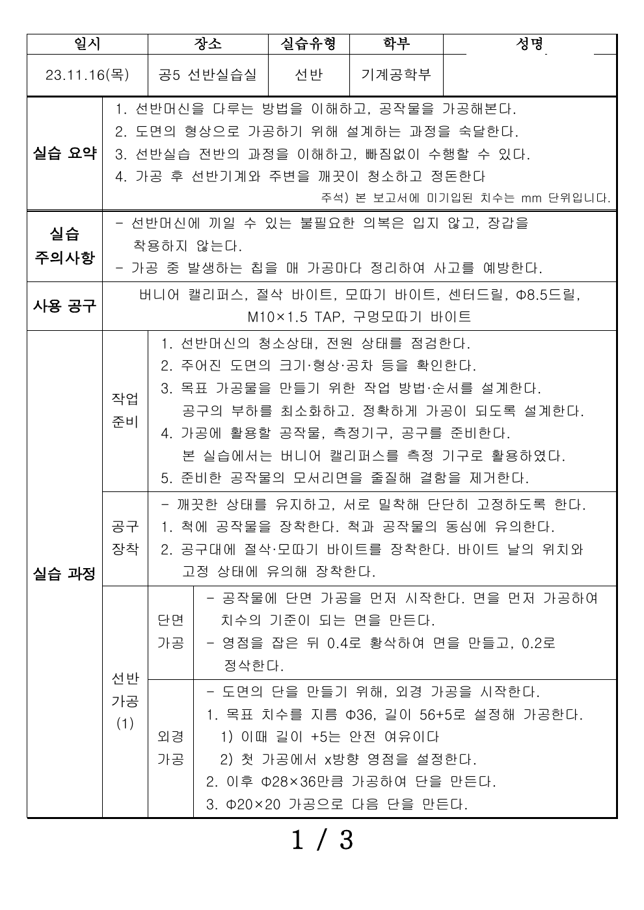